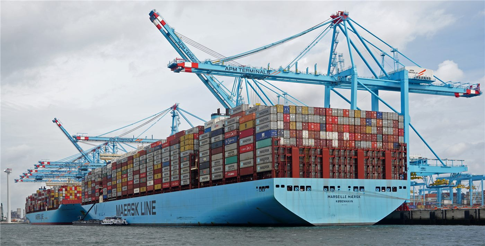

7월 중순 수출 549억 달러 ‘역대 7월 중 최고’… 전월보단 소폭 둔화
7월 중순까지의 한국 수출이 549억 달러로 집계돼, 역대 7월 같은 기간 중 최고를 기록했다. 다만 증가세는 전월보다 소폭 꺾여, 하반기 흐름을 두고 신중론도 나온다.
왕숙영 기자 · 2026.07.23
橋한국

관세청 집계에서 7월 1~20일 수출이 549억 달러로 역대 7월 중 최고를 기록했다고 경향신문이 전했다. 반도체 등 주력 품목이 실적을 끌어올린 것으로 분석된다.
광고 문의 · 300×250수출은 한국 경제의 성장 엔진이다. 반도체 경기 회복과 단가 상승이 수출액을 밀어올렸고, 자동차·선박 등도 견조한 흐름을 보인 것으로 파악된다. 다만 증가율이 전월보다 낮아진 점은 세계 수요의 불확실성을 반영한다.
대외 여건은 녹록지 않다. 미국의 관세 강화, 주요국 성장 둔화, 환율 변동은 수출 기업의 채산성과 물량에 영향을 준다. 특정 품목·시장 편중을 줄이고 시장을 넓히는 노력이 과제로 지적된다.
수출 호조는 고용·투자로 이어질 여지가 있지만, 그 온기가 내수와 중소기업까지 퍼지는지는 별개의 문제다. 지표의 개선이 체감 경기로 연결되도록 하는 것이 관건이다.
華橋時報는 무역 지표를 국가 간 경쟁의 잣대만이 아니라, 그 흐름에 얽힌 기업과 노동자의 일상으로 읽는다. 수출입에 종사하는 화인 상공인에게도 이 수치는 사업 계획의 중요한 신호다.
출처·참고 (사실 확인용 — 본문은 직접 재작성)
· 경향신문
· 경향신문